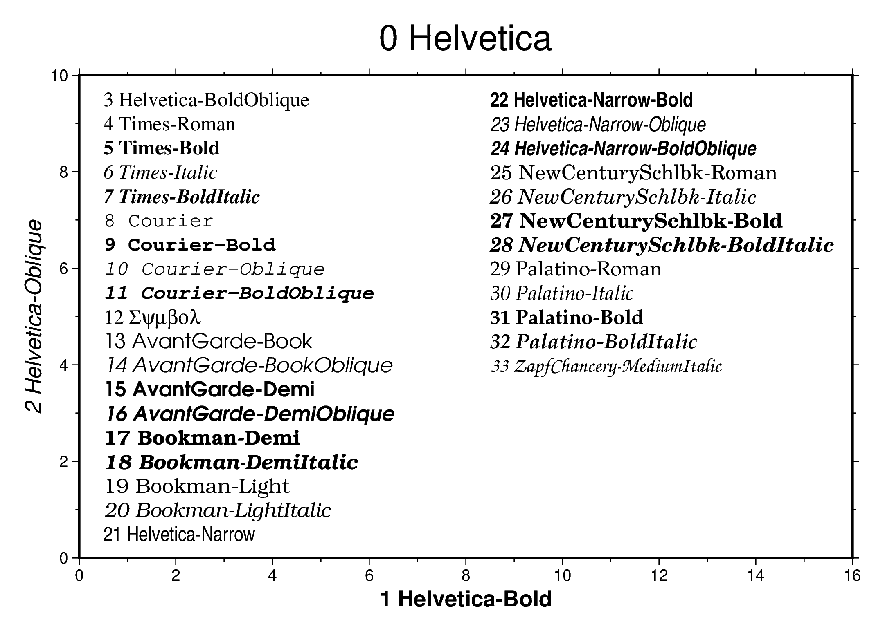

import pygmt
fig = pygmt.Figure()
fig.basemap(projection='X16c/10c', region=[0, 16, 0, 10],
frame = ['WSen+t@%0%0 Helvetica@%%',
'xaf+l@%1%1 Helvetica-Bold@%%',
'yaf+l@%2%2 Helvetica-Oblique@%%'])
fig.text(x=0.5, y=9.5, justify='LM', font='12p,4,Black', text='3 Helvetica-BoldOblique')
fig.text(x=0.5, y=9.0, justify='LM', font='12p,4,Black', text='4 Times-Roman')
fig.text(x=0.5, y=8.5, justify='LM', font='12p,5,Black', text='5 Times-Bold')
fig.text(x=0.5, y=8.0, justify='LM', font='12p,6,Black', text='6 Times-Italic')
fig.text(x=0.5, y=7.5, justify='LM', font='12p,7,Black', text='7 Times-BoldItalic')
fig.text(x=0.5, y=7.0, justify='LM', font='12p,8,Black', text='8 Courier')
fig.text(x=0.5, y=6.5, justify='LM', font='12p,9,Black', text='9 Courier-Bold')
fig.text(x=0.5, y=6.0, justify='LM', font='12p,10,Black', text='10 Courier-Oblique')
fig.text(x=0.5, y=5.5, justify='LM', font='12p,11,Black', text='11 Courier-BoldOblique')
fig.text(x=0.5, y=5.0, justify='LM', font='12p,12,Black', text='12 Symbol')
fig.text(x=0.5, y=4.5, justify='LM', font='12p,13,Black', text='13 AvantGarde-Book')
fig.text(x=0.5, y=4.0, justify='LM', font='12p,14,Black', text='14 AvantGarde-BookOblique')
fig.text(x=0.5, y=3.5, justify='LM', font='12p,15,Black', text='15 AvantGarde-Demi')
fig.text(x=0.5, y=3.0, justify='LM', font='12p,16,Black', text='16 AvantGarde-DemiOblique')
fig.text(x=0.5, y=2.5, justify='LM', font='12p,17,Black', text='17 Bookman-Demi')
fig.text(x=0.5, y=2.0, justify='LM', font='12p,18,Black', text='18 Bookman-DemiItalic')
fig.text(x=0.5, y=1.5, justify='LM', font='12p,19,Black', text='19 Bookman-Light')
fig.text(x=0.5, y=1.0, justify='LM', font='12p,20,Black', text='20 Bookman-LightItalic')
fig.text(x=0.5, y=0.5, justify='LM', font='12p,21,Black', text='21 Helvetica-Narrow')
fig.text(x=8.5, y=9.5, justify='LM', font='12p,22,Black', text='22 Helvetica-Narrow-Bold')
fig.text(x=8.5, y=9.0, justify='LM', font='12p,23,Black', text='23 Helvetica-Narrow-Oblique')
fig.text(x=8.5, y=8.5, justify='LM', font='12p,24,Black', text='24 Helvetica-Narrow-BoldOblique')
fig.text(x=8.5, y=8.0, justify='LM', font='12p,25,Black', text='25 NewCenturySchlbk-Roman')
fig.text(x=8.5, y=7.5, justify='LM', font='12p,26,Black', text='26 NewCenturySchlbk-Italic')
fig.text(x=8.5, y=7.0, justify='LM', font='12p,27,Black', text='27 NewCenturySchlbk-Bold')
fig.text(x=8.5, y=6.5, justify='LM', font='12p,28,Black', text='28 NewCenturySchlbk-BoldItalic')
fig.text(x=8.5, y=6.0, justify='LM', font='12p,29,Black', text='29 Palatino-Roman')
fig.text(x=8.5, y=5.5, justify='LM', font='12p,30,Black', text='30 Palatino-Italic')
fig.text(x=8.5, y=5.0, justify='LM', font='12p,31,Black', text='31 Palatino-Bold')
fig.text(x=8.5, y=4.5, justify='LM', font='12p,32,Black', text='32 Palatino-BoldItalic')
fig.text(x=8.5, y=4.0, justify='LM', font='12p,33,Black', text='33 ZapfChancery-MediumItalic')
fig.show(crop=0.5, width=800)